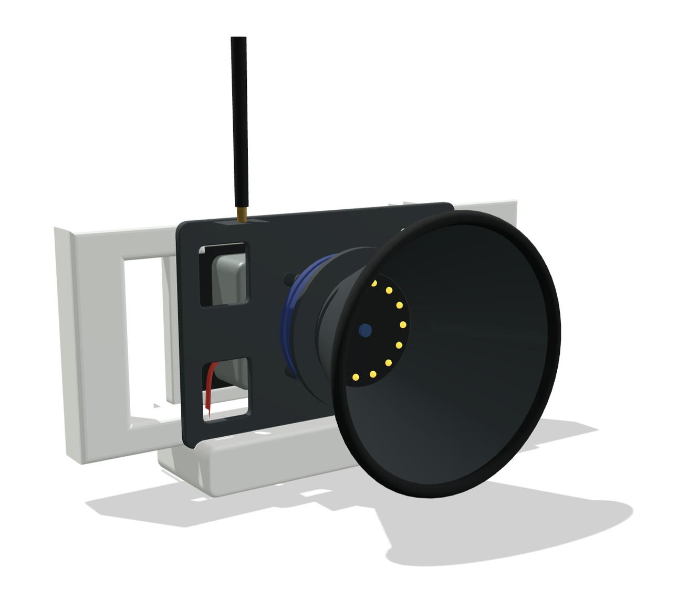
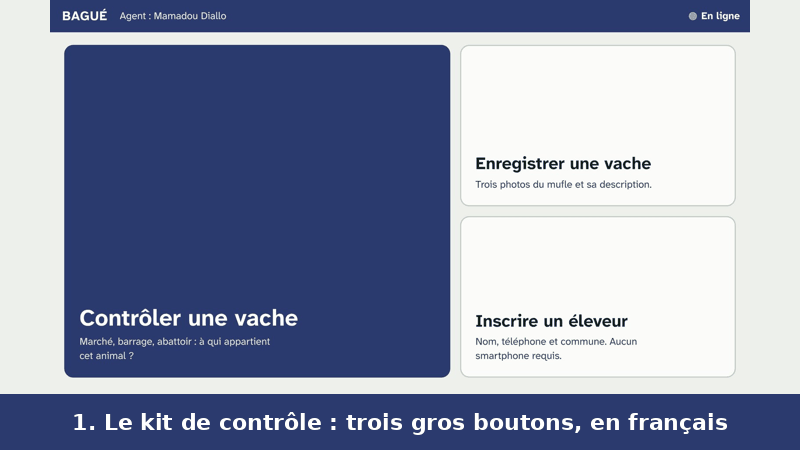

Identifier chaque bovin par son mufle.
Un registre national anti-vol du bétail pour la Guinée. Le nez de chaque vache porte des perles et des sillons uniques, comme une empreinte digitale : une photo suffit pour savoir à qui appartient l'animal, ou s'il a été volé.

Le problème
Le vol de bétail ruine des familles d'éleveurs et nourrit des conflits entre communautés. Le marquage au fer et les boucles d'oreille se modifient, se coupent ou s'arrachent : un animal volé change de marché en un jour, sans preuve de propriété.
L'idée
Le mufle ne change pas et ne s'enlève pas. Le kit le photographie au fond d'un cône éclairé (même distance, même lumière) et le transforme en une empreinte de 128 nombres, comparée au registre national. L'éleveur, lui, n'a besoin que d'un téléphone à touches.
Comment ça marche
Enregistrer
L'agent inscrit l'éleveur et prend trois photos du mufle. La vache reçoit un code BG-… et un QR code, envoyés par SMS.
Contrôler
Au marché, au barrage, à l'abattoir : une photo, une couleur.
- VERT conforme
- ROUGE volé
- ORANGE à refaire
- GRIS inconnu
Signaler un vol
L'éleveur compose
*123#sur n'importe quel téléphone. L'animal passe en alerte dans tout le pays.Voyager, vendre (prévu)
Certificat de voyage signé, vérifiable sans réseau ; vente entre particuliers confirmée par les deux parties.

Le matériel
Kit de terrain : Raspberry Pi CM5, caméra au fond d'un cône à LED, écran tactile, 4G et GPS, pack de batteries amovible. Environ 165 à 250 USD.
Poste fixe solaire : panneau de 200 W, batterie LiFePO4, routeur 4G double SIM, imprimante, station de recharge pour quatre kits. Environ 920 à 1 520 USD.
Ce sont des conceptions : le premier kit physique n'est pas encore assemblé. Prix estimés à partir des composants, avant devis.
La recherche
De la photo à la décision, la même chaîne tourne sur le kit, le serveur et dans les expériences : le modèle voit en production exactement ce qu'il a vu à l'entraînement.
- Cônedistance et lumière fixes
- Qualiténetteté, lumière, reflets ; meilleure prise d'une rafale
- Alignementmufle et narines détectés
- Normalisation224 px, CLAHE
- Empreinteélève MobileNetV4 int8, 128 nombres
- Décisionseuil + marge ; ROUGE = 2 photos concordantes + humain
Apprendre sur le terrain
Professeur ConvNeXt avec AdaFace (marge adaptée à la qualité de l'image), distillé vers un élève léger pour le kit. Les 64 premières dimensions forment une empreinte réduite pour le QR code.
Mesurer honnêtement
Enrôlement et contrôle sur des séances différentes, animaux jamais enregistrés, intervalles de confiance par animal, erreurs par race et par âge. Chaque rapport commence par ses limites.
Des données propres
Collecte avec le kit lui-même, en plusieurs séances. Consentement obligatoire, aucune donnée personnelle dans le jeu d'entraînement, découpage par animal sans fuite.
Résultats, sans arrondir
| Ce qui est mesuré | Résultat | Conditions |
|---|---|---|
| Chaîne complète : kit, serveur, *123#, tableau | Fonctionne de bout en bout | Tests automatiques et démonstrateur |
| Temps de calcul d'une photo, du contrôle qualité à l'empreinte | 6 ms (médiane), 9 ms (95 %) | Élève int8, processeur serveur x86 2 cœurs. Reste à mesurer sur le CM5. |
| Écart entre le modèle float32 et le modèle int8 | Cosinus moyen 0,997 à 0,999 | Deux essais sur données synthétiques |
| Précision sur de vraies vaches guinéennes | Pas encore mesurée | La collecte avec un vétérinaire n'a pas commencé ; le protocole est prêt |
Pour comparaison, une étude récente obtient 96 % sur des images de laboratoire mais 81 % sur des photos de smartphone prises en ferme (Khalifa et Abdultawab, BMC Veterinary Research, 2026). C'est cet écart que le cône et la collecte en Guinée doivent réduire.
Éthique
Personne n'est accusé par une machine
Un ROUGE demande deux photos concordantes et une confirmation humaine. Un doute donne ORANGE, jamais une saisie.
Les erreurs sont publiées
Par race, par âge, par appareil. Un écart entre races bloque le déploiement.
Les éleveurs gardent la main
Consentement, pas de nom ni de téléphone dans les données de recherche, aucun usage fiscal, droit de retrait.
Les animaux sont respectés
Une photo, sans marquage. Le cône est désinfecté entre deux animaux.
L'équipe
Thierno Diallo — technologie : IA de reconnaissance, logiciel des kits et du serveur, architecture et sécurité. Chercheur en IA embarquée, laboratoire du Pr Hongpeng Wang, Harbin Institute of Technology, Shenzhen.
Mamadou Kandara Souaré — ventes et opérations à Conakry : autorités, tests sur le terrain, exploitation et déploiement.
Citer
Diallo, T. I. et Souaré, M. K. (2026). BAGUÉ : identification du bétail par le mufle et registre national anti-vol pour la Guinée. Version 0.3.0.
In English
BAGUÉ is a national cattle anti-theft registry for Guinea based on muzzle biometrics. Low-cost Raspberry Pi CM5 field kits photograph the muzzle inside a lit cone; a distilled, int8-quantised encoder trained with AdaFace turns it into a 128-number template compared against the registry (1:1 verification of the claimed animal is planned for national scale). A red alert requires two concordant photos and human confirmation. Farmers report thefts from any feature phone via USSD (*123#). Evaluation follows a cross-session, open-set protocol with subject-level confidence intervals and per-breed error rates. Accuracy on real Guinean cattle has not been measured yet: field data collection has not started.